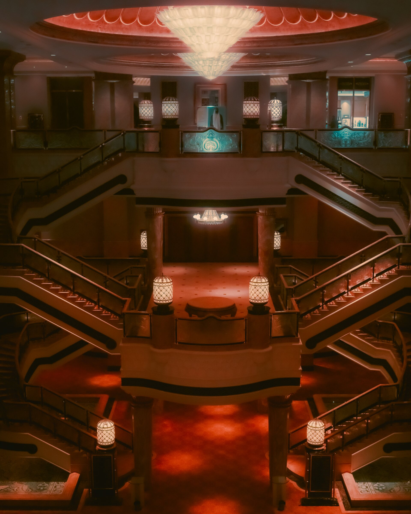
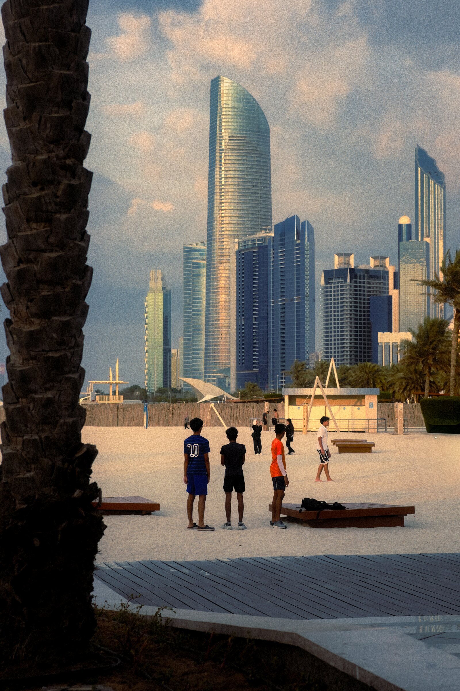

Tanleo
_
Home
Projects
About
Contact
Souq After Dark
After Dark
Palace of Light
Of Light

Blossom, Interrupted
Interrupted
Corniche, Still
Still

Domes at Golden Hour
Golden Hour
Have a story worth telling?
View the Full Archive
→
Get in Touch
→